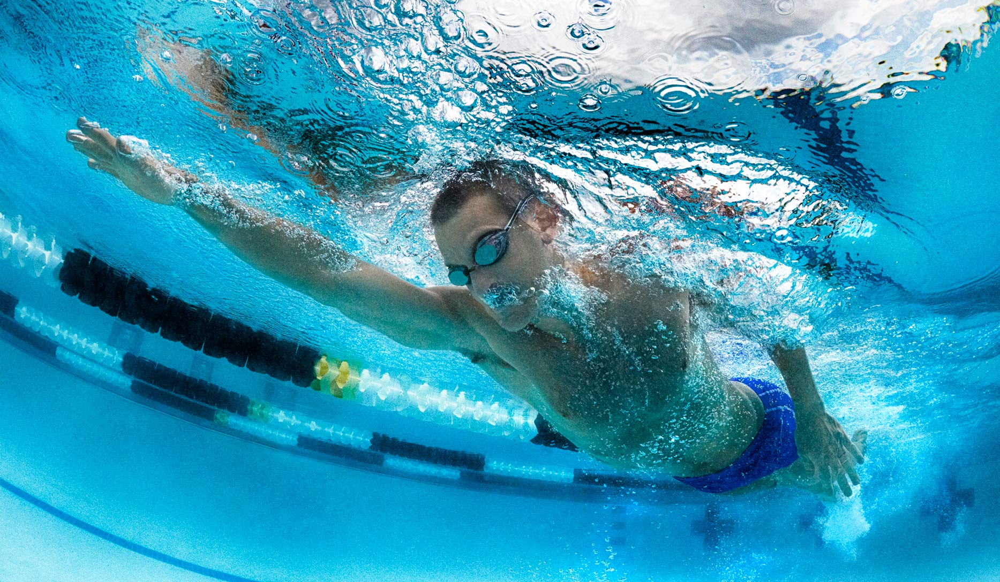

Swimming is an individual or team sport and activity. Competitive swimming is one of the most popular Olympic sports, with events in freestyle, backstroke, breaststroke, and butterfly.
Competitive swimming became popular in the 19th century. The goal of competitive swimming is to break personal or world records while beating competitors in any given event. Swimming in competition should create the least resistance in order to obtain maximum speed. However, some professional swimmers who do not hold a national or world ranking are considered the best in regard to their technical skills. Typically, an athlete goes through a cycle of training in which the body is overloaded with work in the beginning and middle segments of the cycle, and then the workload is decreased in the final stage as the swimmer approaches competition.